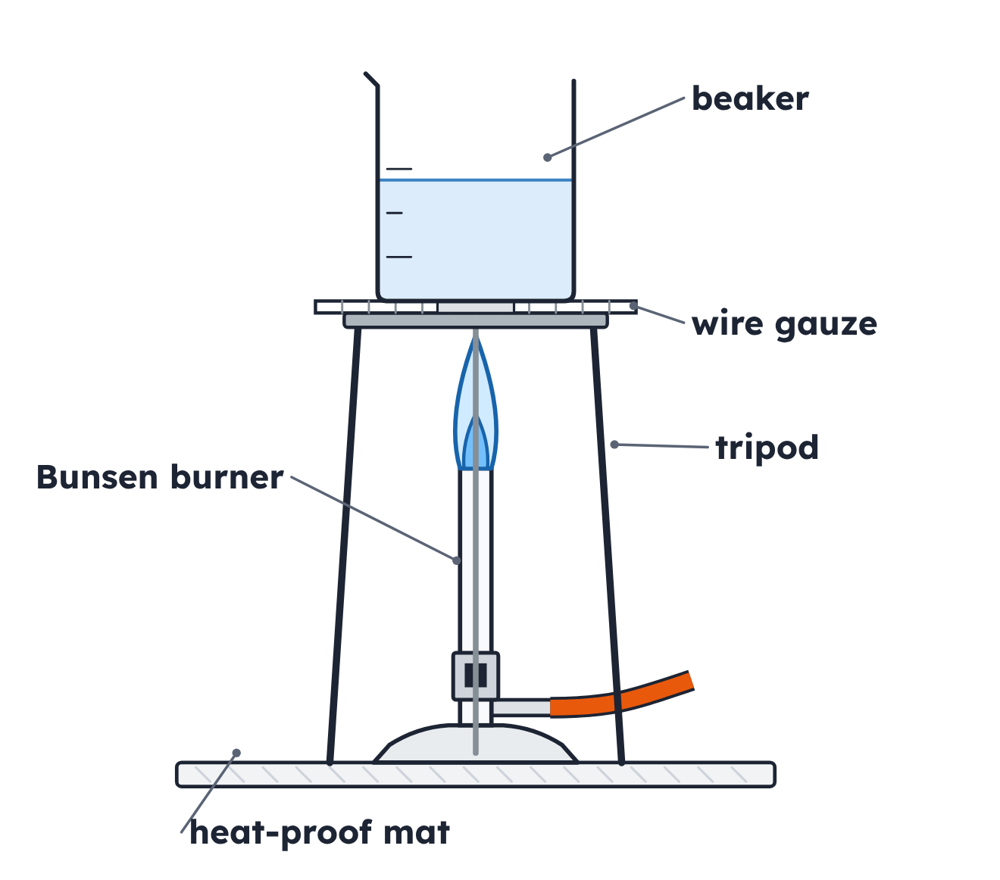
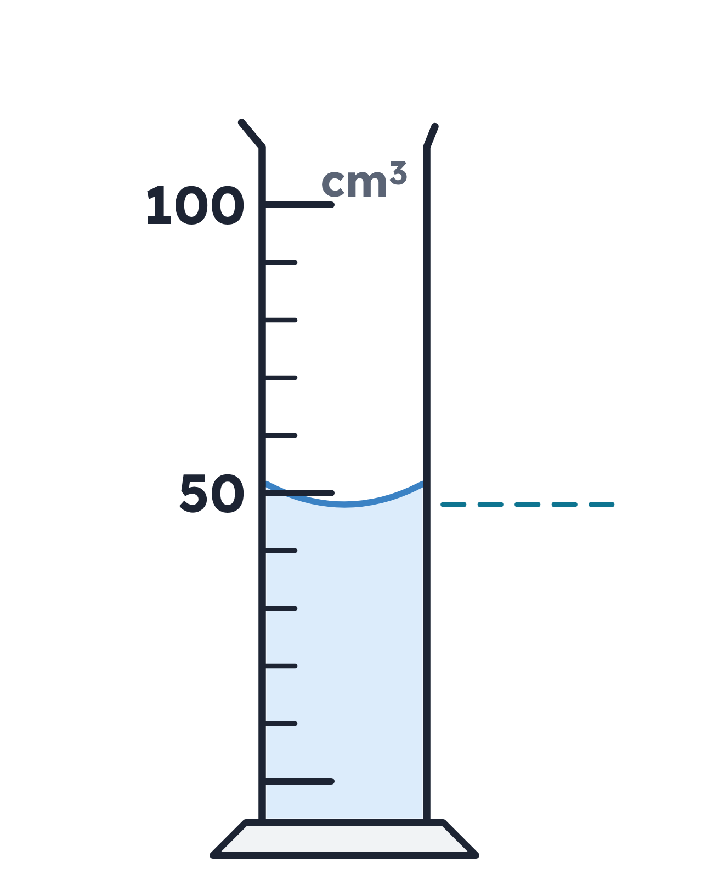
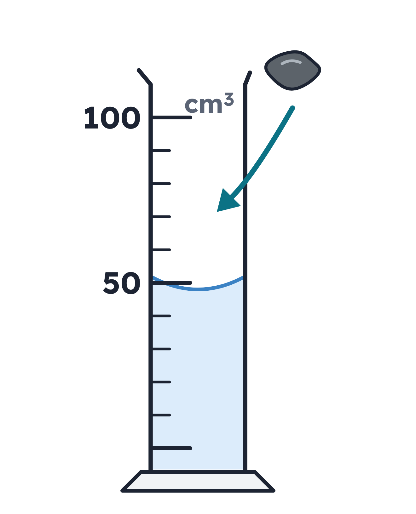
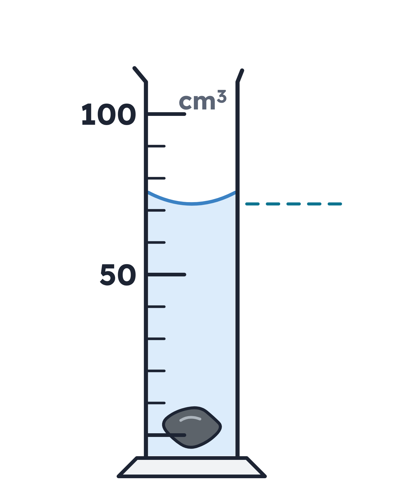
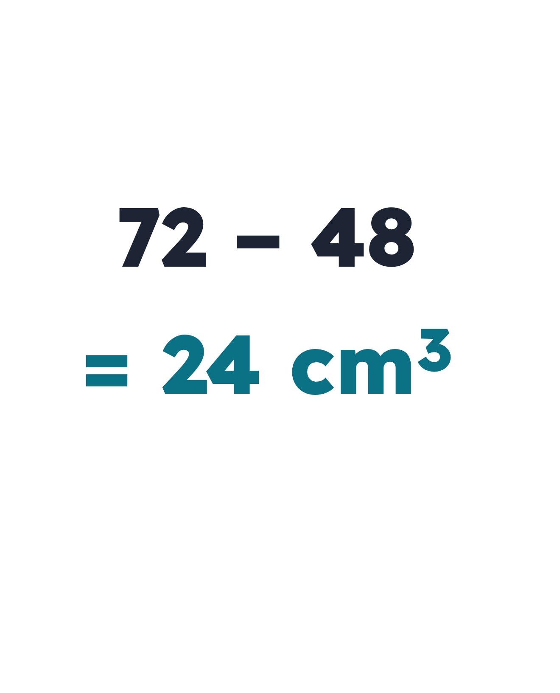
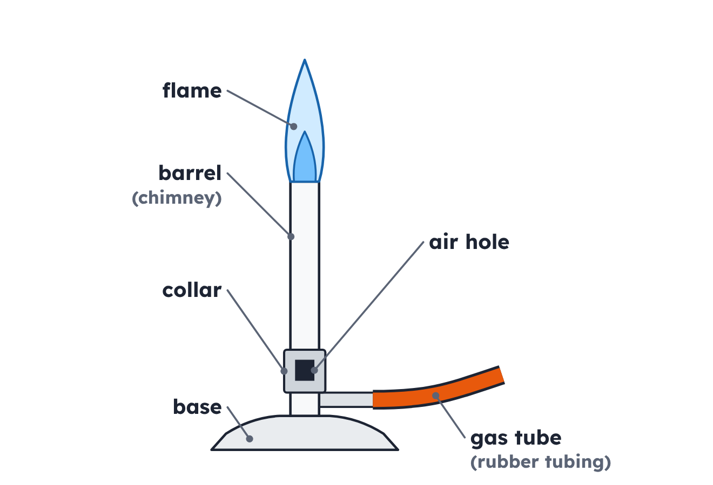
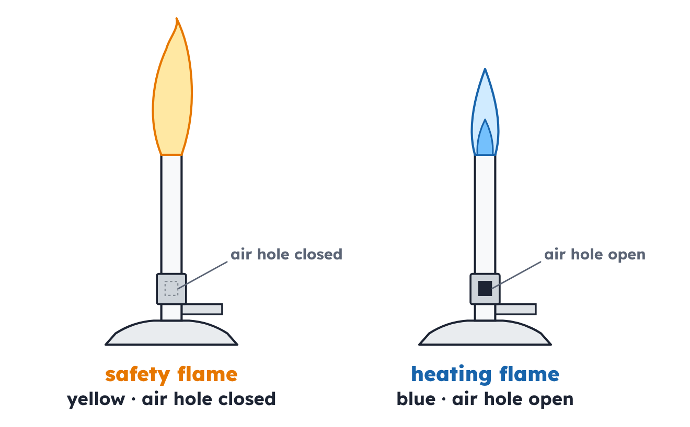

M1 Lesson 3 · Displacement and Bunsen burner
MODULE 1 · LESSON 3 OF 3
Displacement and Bunsen burner
Practicals in the coursebook
1▶️ Watch Watch once. Then pause and say the key idea in your own words. | 2✏️ Train in your coursebook Writing it yourself is what makes it stick. | 3🎯 Check No notes first. Getting it wrong now is how you get it right later. |
1▶️ Watch
2✏️ Train in your coursebook
📘 COURSEBOOK Pages 18–25 Sections 1.5 and 1.6  |
✅ Mark it with the answer book. coursebook pages · not in this preview 📙 Before your test · 4 tasks more in your Workbook, pages 13–18. Not part of this check. |
🪨 Volume of a stone: final − initial
 1Read the water: 48 cm³ |  2Slide it in |  3Read again: 72 cm³ |  4Subtract |
🔥 Parts of a Bunsen burner

🟡 Two flames to learn · Coursebook page 20

Safety flame
A yellow flame. The air hole is closed.
A yellow flame. The air hole is closed.
Heating flame
A blue flame. The air hole is open.
A blue flame. The air hole is open.
👣 Light it safely
⚠️ First: hair tied back, goggles on.
STEP 1
🧱
Mat down, bench clear
STEP 2
🔗
Tube on, air hole closed
STEP 3
🔥
Match above the barrel
STEP 4
🟡
Gas on: yellow flame
STEP 5
🔵
Open air hole: blue flame
STEP 6
🧪
Heat. Face and hands back
STEP 7
⛔
Gas off when done
🧪 Practicals: in the lab with your teacher
🧪 Practicals coursebook pages · not in this preview 1 · Lab stations Coursebook pages 148–152 2 · Bunsen licence Coursebook pages 151–156
Displacement (Coursebook pages 17–19)
volume of object = final volume − initial volume
- Pour water into a measuring cylinder. Read the initial volume.
- Tilt the cylinder and let the object slide gently down the side, so no water splashes out.
- The object must be completely under the water. Read the final volume.
- Volume of the object = final volume − initial volume.
Lighting a Bunsen burner (Coursebook page 20)
Tie back long hair and put on your goggles first.
- Place the Bunsen burner on a heat-proof mat and clear the area of books and bags.
- Connect the rubber tubing to the gas tap and the Bunsen burner and check it is secure. (Check that the air hole is closed.)
- Light the match and hold it just above the top of the barrel.
- Turn on the gas slowly to light the burner. You get the yellow safety flame.
- Adjust the air hole to get the correct flame (open it for the blue heating flame).
- Start heating the substance carefully, keeping your face and hands away from the flame.
- Turn the gas off when you are finished.
3🎯 Check